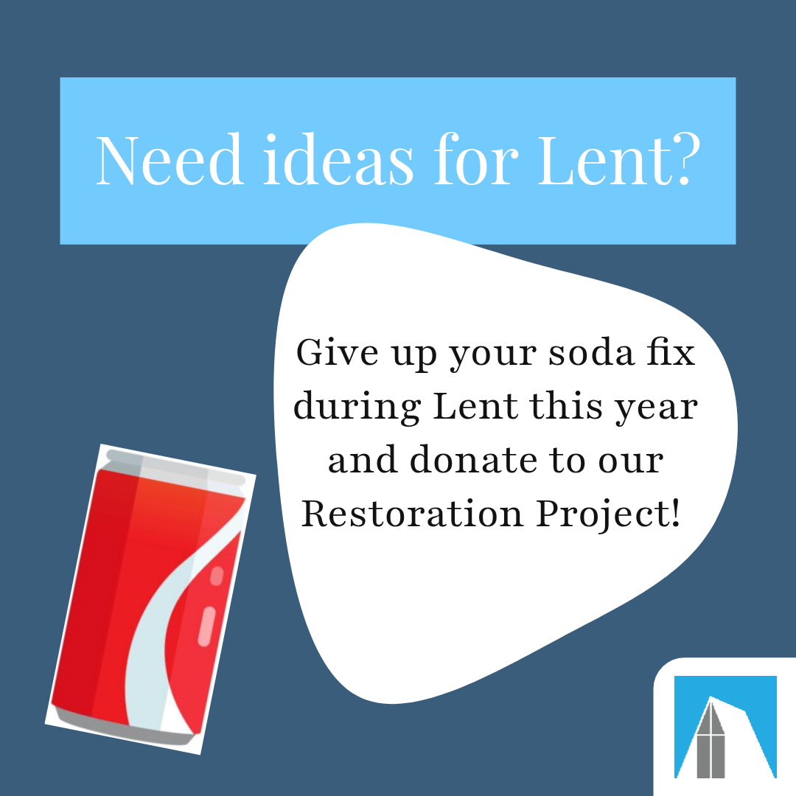

My Internship!
This semester, I had the opportunity to do an internship for Keeping the Faith in Downtown Provo. It is a restoration project for a historic building located right in the heart of Downtown Provo. It was an amazing experience and it taught me a lot of valuable professional skills.
I was able to work with a team of 5 people. We were tasked to refresh their social media pages and increase their followers in order to gain awareness for their project.
Keeping the Faith in Downtown Provo
We worked as a team to interview congregation and community members, to create new posts for their Instagram and Facebook pages, and to find ways to increase engagement and followers on their social media pages.

These were a couple of the posts I made. They received high engagement (likes, views, etc.) on both Facebook and Instagram.
During this internship, we focused on:
- Instagram and Facebook
- Archived all old posts to start fresh
- Created new posts using a style guide
- Created a content calendar
- Scheduled posts in advance
- OCI Class requirements
- An Engagement Letter
- Meeting twice weekly as a team
- Midterm and Final Presentations
- The Final Report
- A Final Cover Letter
- Telling a Story on social media
- Interviewing our sponsors
- Interviewing Congregation members
- Interviewing Community members involved in the project
- Focusing on the "Why" of the restoration project
Tableau Graph